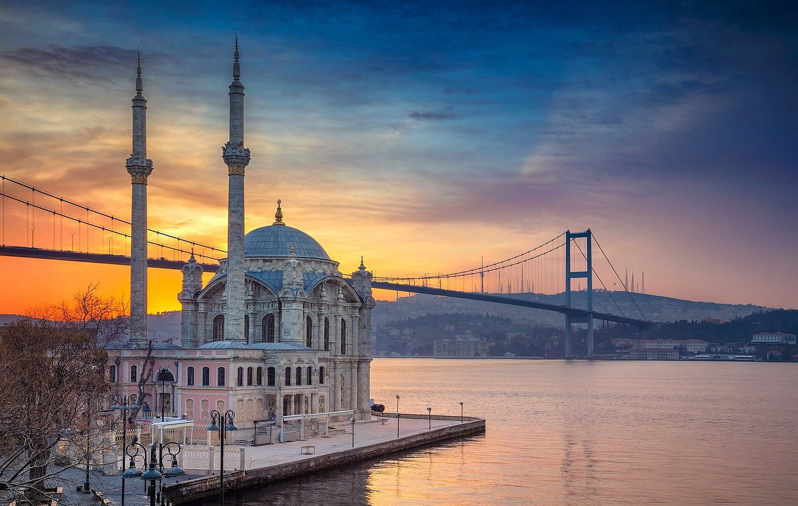
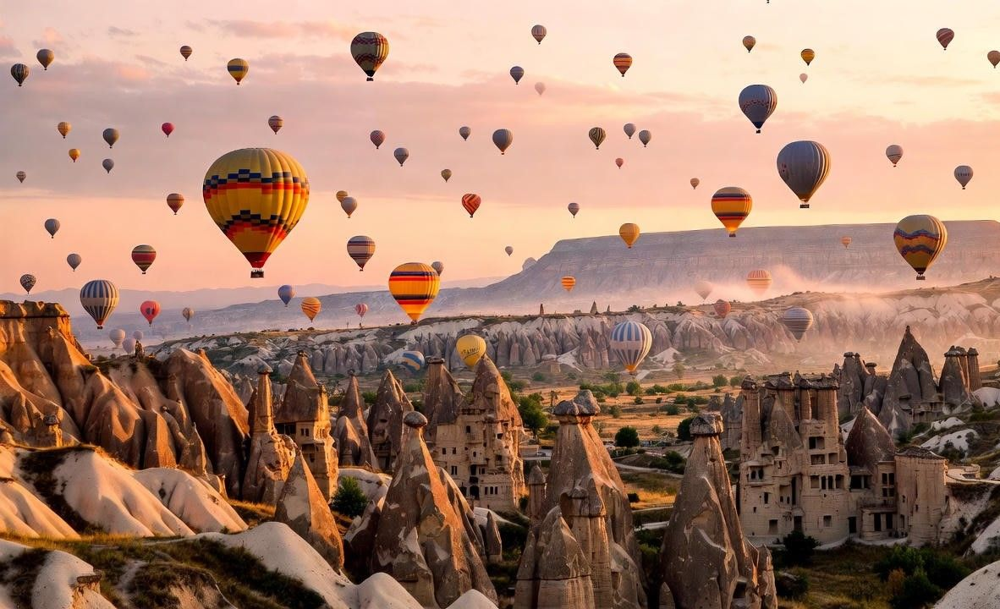
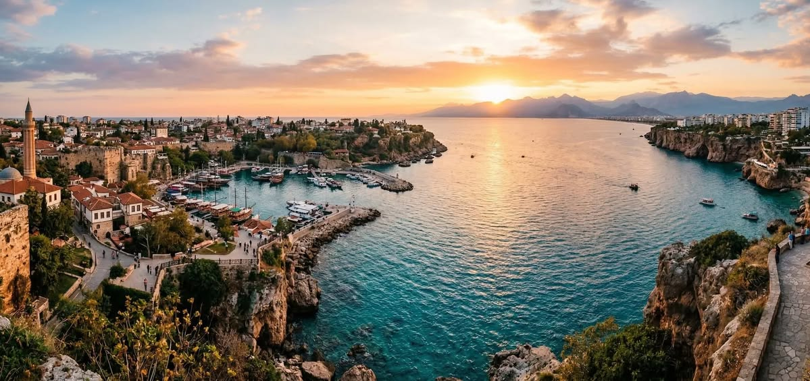
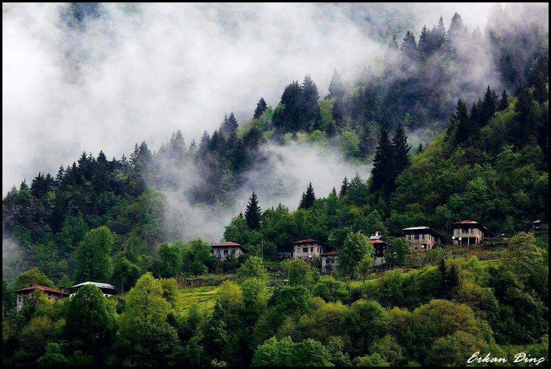
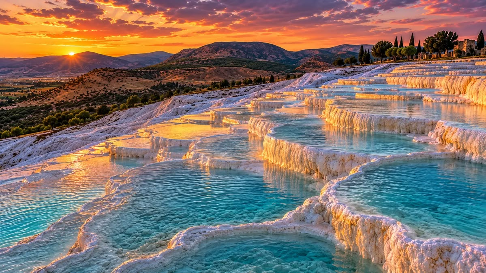

Place a visiter en turc
Istanbul
À cheval entre l'Europe et l'Asie, Istanbul est le cœur culturel et historique du pays .

Voici les principale activites
- La Basilique Sainte-Sophie (Ayasofya)
- La Mosquée Bleue (Sultan Ahmed)
- Le Palais de Topkapı
- La Citerne Basilique (Yerebatan Sarnıcı)
- La Tour de Galata
- L'Avenue İstiklal et la Place Taksim
Pour plus d'info
La Cappadoce (région / Göreme)
Célèbre pour ses paysages lunaires et ses formations géologiques uniques.

Voici les principale activites
- Vol en montgolfière
- Explorer le Musée en plein air de Göreme
- Visiter Derinkuyu ou Kaymaklı, anciennes cités refuges
Pour plus d'info
Antalya
La perle de la Riviera turque, qui combine plages et patrimoine antique .

Voici les principale activites
- Flâner dans Kaleiçi
- Admirer les chutes de Düden
- Profiter de la plage ou d'une balade en bateau
Plus plus d'info
Trabzon
Une culture propre et des paysages montagneux d'un vert spectaculaire.

Voici les principale visite
- Le Monastère de Sümela
- Le Pavillon d'Atatürk (Atatürk Köşkü)
- La Mosquée Sainte-Sophie de Trabzon (Ayasofya)
- Le lac d'Uzungöl
- La grotte de Çal (Çal Mağarası)
- La colline de Boztepe
Pour plus d'info
Pamukkale (proche de Denizli)
Un site naturel spectaculaire fait de sources chaudes.

Voici les principale visite
- Marcher sur les travertins blancs
- Visiter Hiérapolis
Pour plus d'info